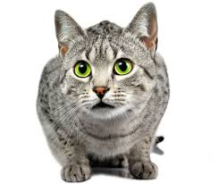

|  |
| Egyptian Mau |
BEHAVIOR
The Egyptian Mau is gentle and loving, but they do require a certain level of attention from their people. You can expect an Egyptian Mau to be wherever you are, including your shoulders or your lap, and they are at their happiest when interacting with their family.
This quick cat loves to run, jump and chase things, and much of their exotic nature has stayed with them throughout domestication. It has been said the breed can run up to 30 miles per hour. The Egyptian Mau is happiest when playing with the people it loves and toys that test its abilities. Since they are such great jumpers, remember to keep anything hazardous locked away, not just up on a high shelf.
GROOMING
The Egyptian Mau’s medium coat varies in texture depending on its color—smoke-colored Maus will have silky, fine fur, while silver or bronze Maus tend to have a more dense and resilient texture, says Morgan. Whatever the texture, you can keep your Egyptian Mau’s coat at its healthiest with weekly combings.
HEALTH PROBLEMS
The Egyptian Mau is generally a healthy breed, although certain conditions can occur at an increased frequency within the breed or through a genetic association. These conditions may include, but are not limited to, the following: Leukodystrophy, Pyruvate kinase deficiency and Urate urolithiasis.
NUTRITION
Although the Egyptian Mau is a generally active and energetic breed, they can still become overweight or obese with overfeeding. It is best to avoid offering table scraps and only offer treats in moderation to prevent excessive weight gain. Treats should compose less than 10% of the diet. It is generally best to offer portion controlled meals of a good quality, balanced diet.